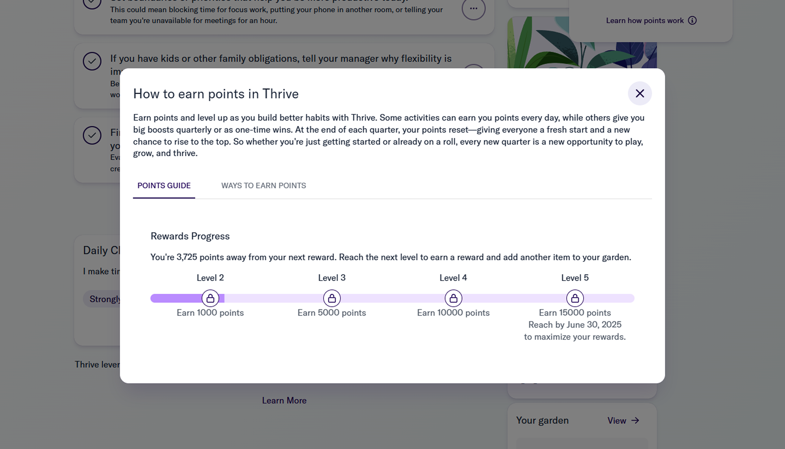
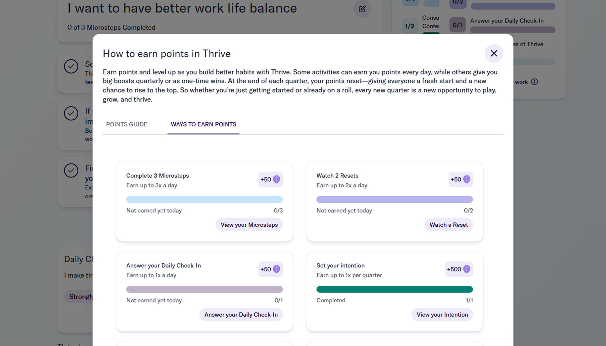
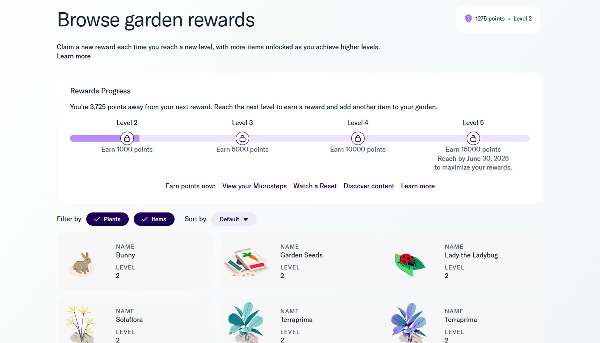

Context
Thrive is a mental-health/productivity platform used by enterprise workforces to build sustainable Microsteps that lower stress and improve focus. Post-onboarding engagement flattened in weeks 2–4, and users lacked a clear sense of “progress” or what to do next. We needed a durable way to raise day-to-day motivation, increase retention, and lay a foundation for a future rewards program that enterprise customers could optionally enable.
Product, Behavioral Science, Data, Front-end/Back-end, Lifecycle/CRM, Enterprise Success, Legal/Compliance.
Problem
Users complete actions (Microsteps, reflections, lessons), but don’t see how those actions add up or why they matter. Badges exist, yet there’s no single, transparent system that connects action → progress → reward. This ambiguity suppresses daily return behavior and weakens long-term adherence to healthy habits.
Design challenge: Create an ethical, accessible, and scalable gamification layer that:
- Makes progress legible and motivating
- Guides “what to do next” without pressure
- Scales into an enterprise-ready rewards program
Evidence
Early return was solid but tapered by week four (from low-40s% to mid-20s%). Daily usage sat in the mid-teens, and about a third of active users completed Microsteps on 3+ days/week. Roughly one in five users could explain how actions translated to progress. Around one in ten support tickets asked “what’s next?”, and session replays showed users stalling without clear guidance.
- Retention: week-1 in the low-40s% → week-4 in the mid-20s%
- Usage: DAU/MAU in the mid-teens; ~⅓ of actives do Microsteps 3+ days/week
- Understanding: ~1 in 5 could explain action → progress
- Friction: ~1 in 10 tickets ask “what’s next?”; replays show stalls without guidance
NDA note: Metrics shown as ranges/approximations; client identifiers and exact values are intentionally withheld.
My Role
I led the end-to-end design and rollout of a unified Points & Levels system - owning product strategy, experience design, and experimentation. My focus was creating an ethical, scalable progression model that made progress obvious, guided next steps, and set us up for a future rewards program. I partnered cross-functionally (PM, Eng, Data, Behavioral Science, Compliance, CS) to ship fast and safely.
Key responsibilities included:
- 🧠 Strategy & system architecture: Defined earn rules, caps, level thresholds, Daily Quests, streak guardrails, and progression UX.
- 🧩 Experience design: Led end-to-end UX/UI for the Achievements Hub, Level Tracker, Daily Quests, progress toasts, and weekly recap (web & mobile).
- 🧪 Experimentation: Authored success metrics, event schema, and the A/B plan; partnered with Data on instrumentation and read-outs.
- 🛡️ Ethical guardrails: Calm defaults, opt-out, no punitive loss, WCAG AA compliance, and inclusive copy.
- 🧱 Design-system integration: Built reusable components (ProgressBar, QuestCard, LevelBadge, RewardTeaser) mapped to tokens for scale.
- 🤝 Cross-functional leadership: Orchestrated phased rollout and enterprise controls with Legal/Compliance, CRM/Lifecycle, and Customer Success.
Solution
Thrive Points & Levels: a unified, transparent progress layer embedded across core moments.
Core loop
- Do a Microstep / reflection / session → earn points (clear “+X pts” toast).
- See progress on a persistent Level Tracker (Lv1→Lv5) with tooltips explaining how to advance.
- Get guided next steps via Daily Quests (e.g., “Complete 3 Microsteps today”) and Next‑Best‑Action chips.
- Celebrate with lightweight level‑up moments and a weekly recap that visualizes momentum.
- Preview rewards (future store teaser) to make long‑term value tangible.
Enterprise-ready controls
- Tenant-level earn-rate ranges and toggles (e.g., disable streaks, adjust quest difficulty).
- Privacy-respecting analytics and export for HR partners.
- Localization and accessibility baked in from day one.



Impact
Quantitative
I instrumented a pilot A/B across enterprise tenants, tracking activation, retention, habit depth, and support signals over a four-week window. Success was defined upfront (retention, DAU/MAU, Microsteps per user/week, session duration, and “what’s next?” tickets), with guardrails for well-being and accessibility. Results are shown as ranges/approximations to respect NDA.
Early retention and daily use went up, habits got deeper, sessions got longer, and “what’s next?” tickets dropped.
- 7-day retention: low-40s% → low-50s% (more people came back in the first week)
- Week-4 retention: mid-20s% → high-20s% (more users were still active about a month later)
- Microsteps per user/week: ~+⅓ (deeper habit depth)
- Session duration: low-teens % increase (slightly longer, more complete sessions)
- “What’s next?” tickets: ~−⅓ (the product now points the way)
Qualitative
I ran mixed-methods research alongside the pilot: in-product micro-surveys, 1:1 interviews across roles and geographies, and heuristic reviews of key flows. We focused on clarity (“do I know what to do next?”), motivation without pressure, and perceived fairness/ethics. Quotes are paraphrased and de-identified to preserve confidentiality.
- Users: consistent themes of “I know what moves me forward” and “motivating without pressure.”
- Enterprise: weekly recaps make team momentum coachable.
- Risk check: no adverse trends in well-being pulses or “streak loss” help-center searches.
NDA note: Metrics shown as ranges/approximations; tenant identifiers and exact values intentionally withheld.
Belief
The system aligns with behavioral science and ethical design:
- Goal-gradient: visible distance to the next level increases effort.
- Self‑Determination Theory: autonomy (opt-in, choose quests), competence (levels), relatedness (team recaps).
- Fresh-start effect & salience: weekly recap and timely nudges.
- Positive reinforcement, not punishment: gentle streak protection and no harsh loss mechanics.
Because the experience is transparent, encouraging, and configurable, it improves daily motivation now and cleanly scales into a rewards marketplace later without re-architecting the UX or data model.